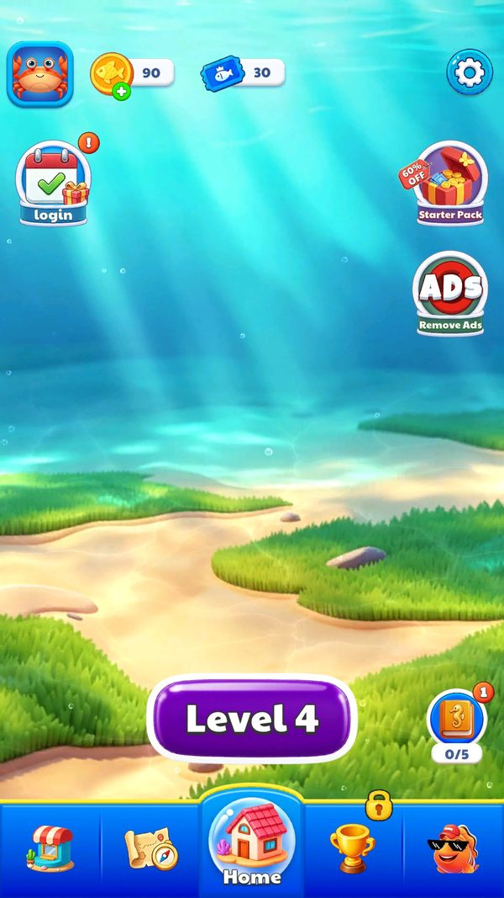
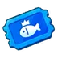
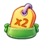

Kinh tế: mạng, vàng, vé cá
Kinh tế rất gọn, chỉ có 8 vật phẩm chia hai nhóm.
Mô tả
- Kinh tế rất gọn, chỉ có 8 vật phẩm chia hai nhóm.
- Nhóm tiền tệ gồm mạng (10001), vàng (10002) và vé cá (10003).
- Nhóm hỗ trợ gồm bốn booster là lưới bắt cá (20001), xoá sạch (20002), búa (20003), làm mới (20004) và một vật phẩm nhân đôi thưởng (30001).
- Người chơi mới chỉ được cấp 5 mạng, mọi thứ khác bằng 0.
- Mất mạng khi thua: Số mạng giảm
- Dùng booster trong màn: Bàn chơi thay đổi theo loại booster
- Xem mô tả booster lần đầu: Chỉ hiện một lần cho mỗi booster
- Nhận vàng từ điểm danh: Vàng tăng 50, 100 hoặc 200 tuỳ ngày
Lưu ý
Ảnh chụp màn hình (2)
Chụp trực tiếp từ game đang chạy: 2026-10-06 · LDPlayer 9 · Android 9 · 1080×1920 · máy ảo PHM110 · v1.4111 (cài từ Google Play ngày 12/09/2026) · tài khoản test JadeGill, đang ở level 4. Bấm ảnh để phóng to, dùng phím ← → để chuyển ảnh.



Mở khóa & điểm vào
Có từ đầu. Ba booster mở dần kèm popup hướng dẫn, đánh dấu bởi GuideData.UnlockTipItemTip, UnlockClearItemTip và UnlockRefreshItemTip.
Điểm vào:
- Thanh tài nguyên ở Home
- UIPanelLevelItem trong màn chơi
- UIPanelItemTip khi bấm giữ một booster
Cách hoạt động
- ItemConfig định nghĩa 8 vật phẩm với ItemId, ItemType, khoá dịch tên và mô tả, đường dẫn icon và DefaultItemCount.
- ItemType 1 là tiền tệ, ItemType 2 là vật phẩm dùng được.
- Số lượng lưu trong ITEM_DATA_KEY dạng từ điển ItemId sang số lượng.
- Mạng hồi theo thời gian do TimerManager quản lý.
- Ba booster tip, clear và refresh còn được server cấp thêm qua tham số items_number, hiện đang là 0 cả ba nên không có suất tặng nào.
- Vé cá liên quan tới tham số FishTicketNumber đang ở mức 10 cho cả ba mốc.
Luồng chi tiết theo code
ItemConfig định nghĩa 8 vật phẩm với ItemId, ItemType, khoá dịch tên và mô tả, đường dẫn icon và DefaultItemCount. ItemType 1 là tiền tệ, ItemType 2 là vật phẩm dùng được. Số lượng lưu trong ITEM_DATA_KEY dạng từ điển ItemId sang số lượng. Mạng hồi theo thời gian do TimerManager quản lý. Ba booster tip, clear và refresh còn được server cấp thêm qua tham số items_number, hiện đang là 0 cả ba nên không có suất tặng nào. Vé cá liên quan tới tham số FishTicketNumber đang ở mức 10 cho cả ba mốc.
Phần thưởng
PHẦN THƯỞNG
| Bối cảnh | Phần thưởng | Bằng chứng |
|---|---|---|
| Điểm danh 7 ngày | ngày 1 là 50 vàng, ngày 2 là 1 lưới, ngày 3 là 100 vàng, ngày 4 là 1 xoá sạch, ngày 5 là 200 vàng, ngày 6 là 1 làm mới, ngày 7 là 1 lưới cộng 1 xoá sạch cộng 1 làm mới | SignConfig.json |
Phần thưởng theo code
| Ngữ cảnh | Phần thưởng | Evidence |
|---|---|---|
| Điểm danh 7 ngày | ngày 1 là 50 vàng ngày 2 là 1 lưới ngày 3 là 100 vàng ngày 4 là 1 xoá sạch ngày 5 là 200 vàng ngày 6 là 1 làm mới ngày 7 là 1 lưới cộng 1 xoá sạch cộng 1 làm mới | SignConfig.json |
Số liệu chính
| Chỉ số | Giá trị | Nguồn |
|---|---|---|
| ItemConfig 8 vật phẩm | 10001 mạng loại 1 mặc định 5; 10002 vàng loại 1 mặc định 0; 10003 vé cá loại 1 mặc định 0; 20001 lưới bắt cá loại 2; 20002 xoá sạch loại 2; 20003 búa loại 2; 20004 làm mới loại 2; 30001 nhân đôi thưởng loại 2 | AssetRes/Configs/Default/ItemConfig.json |
| ITEM_DATA_KEY | 10001 bằng 5, mọi mục khác bằng 0 ở tài khoản mới | PlayerPrefs |
| items_number | 0_0_0 | SDKManager.getOnlineConfigParams |
| FishTicketNumber | 10_10_10 | SDKManager.getOnlineConfigParams |
| MultiReward | 1, mặc định client là 0 | SDKManager.getOnlineConfigParams |
| Giá Lưới | 480 vàng | popup booster, 06/10/2026 |
| Giá hồi sinh | 600 vàng | UIPanelRevive, 06/10/2026 |
Use case (4)
Bấm vào từng use case để mở. Mở/đóng tất cả
UC-01 Mất mạng khi thua
Các bước- Giảm ITEM_DATA_KEY mục 10001 đi 1
- Nếu về 0 thì chặn vào màn mới và bắt đầu đếm hồi
| Actor | System |
|---|---|
| Trigger | Thua màn |
| Điều kiện | Còn ít nhất 1 mạng |
| Kết quả | Số mạng giảm |
| Quy tắc / số liệu | Mặc định tối đa 5 mạng theo DefaultItemCount của 10001 |
| Evidence | ItemConfig 10001 DefaultItemCount 5; ITEM_DATA_KEY |
UC-02 Dùng booster trong màn
Các bước- Trừ số lượng trong ITEM_DATA_KEY
- Áp dụng hiệu ứng lên bàn chơi
- Tăng LevelData.LevelItemNumber
| Actor | Player |
|---|---|
| Trigger | Bấm một booster ở UIPanelLevelItem |
| Điều kiện | Còn số lượng lớn hơn 0 |
| Kết quả | Bàn chơi thay đổi theo loại booster |
| Evidence | UIPanelLevelItem; LevelData.LevelItemNumber |
UC-03 Xem mô tả booster lần đầu
Các bước- UIPanelItemTip mở với tên và mô tả lấy từ ItemConfig
- Đặt cờ UnlockTipItemTip hoặc UnlockClearItemTip hoặc UnlockRefreshItemTip thành true
| Actor | Player |
|---|---|
| Trigger | Booster mở khoá lần đầu |
| Điều kiện | Cờ tương ứng trong GUIDE_DATA_KEY còn false |
| Kết quả | Chỉ hiện một lần cho mỗi booster |
| Evidence | GuideData.UnlockTipItemTip; UIPanelItemTip; ItemConfig.ItemDec_Localization |
UC-04 Nhận vàng từ điểm danh
Các bước- Đọc RewardStr của ngày tương ứng
- Cộng vào ITEM_DATA_KEY
| Actor | Player |
|---|---|
| Trigger | Nhận thưởng ngày 1, 3 hoặc 5 |
| Điều kiện | Đã điểm danh |
| Kết quả | Vàng tăng 50, 100 hoặc 200 tuỳ ngày |
| Evidence | SignConfig.RewardStr |
Cấu hình (9)
Gộp mọi nguồn: const trong code, JSON mặc định trong Resources, bảng static, storage key, AB test, cờ server.
| Nguồn | Key | Kiểu | Giá trị | Ý nghĩa | Nơi định nghĩa |
|---|---|---|---|---|---|
| json default | ItemConfig 8 vật phẩm | bảng | 10001 mạng loại 1 mặc định 5; 10002 vàng loại 1 mặc định 0; 10003 vé cá loại 1 mặc định 0; 20001 lưới bắt cá loại 2; 20002 xoá sạch loại 2; 20003 búa loại 2; 20004 làm mới loại 2; 30001 nhân đôi thưởng loại 2 | Toàn bộ danh mục vật phẩm | AssetRes/Configs/Default/ItemConfig.json |
| storage key | ITEM_DATA_KEY | json | 10001 bằng 5, mọi mục khác bằng 0 ở tài khoản mới | Kho vật phẩm của người chơi | PlayerPrefs |
| server info | items_number | string | 0_0_0 | Số booster tip, clear và refresh do server cấp thêm, hiện bằng 0 | SDKManager.getOnlineConfigParams |
| server info | FishTicketNumber | string | 10_10_10 | Ba mốc vé cá do server cấu hình | SDKManager.getOnlineConfigParams |
| server info | MultiReward | int | 1, mặc định client là 0 | Server bật tính năng nhân đôi phần thưởng | SDKManager.getOnlineConfigParams |
| runtime LDPlayer 06/10/2026 | Giá Lưới (20001) | int | 480 vàng, hoặc 1 quảng cáo thưởng nhận 1 cái | Giá mua lẻ booster trong màn | ảnh chụp screenshots/booster_net_buy.jpg |
| runtime LDPlayer 06/10/2026 | Mạng sau khi thua | int | 10001 vẫn bằng 5 sau 2 lần thua level 4 | Thua ở level đầu không trừ mạng | facts/runtime/decoded/playerprefs_2026-10-06.json |
| runtime LDPlayer 06/10/2026 | Công dụng vé cá (10003) | currency | Trả giá công trình khu trưng bày (Tick); 30 vé → 20 sau khi đặt Knight | Vé cá chính là tiền tệ Tick | ảnh chụp screenshots/exhibition_place_knight.jpg |
| runtime LDPlayer 06/10/2026 | Vé cá sau 3 màn thắng | int | 30 | Khớp FishTicketNumber 10_10_10 nếu mỗi màn thắng cho 10 vé (suy luận) | facts/runtime/decoded/playerprefs_2026-10-06.json |
Bảng config gốc trong APK
ItemConfig.json – 8 vật phẩm
ItemType 1 là tiền tệ, 2 là vật phẩm dùng được. DefaultItemCount là số có khi tạo tài khoản. AssetRes/Configs/Default/ItemConfig.json · 8 dòng.
| ItemId | ItemType | ItemName_Localization | ItemDec_Localization | ItemIcon | DefaultItemCount |
|---|---|---|---|---|---|
| 10001 | 1 | 生命值Lives | 生命值Lives | icon_love | 5 |
| 10002 | 1 | 金币Coins | 金币Coins | icon_gold_coin | 0 |
| 10003 | 1 | 鱼票Fish Ticket | 鱼票Fish Ticket |  icon_ticket | 0 |
| 20001 | 2 | 捕鱼网Net | 收集上方一个鱼缸Collect the fish tank above | level_down_prop_fishing_net | 0 |
| 20002 | 2 | 清空Clear | 清空临时位置鱼Clear the fish from the holding area. | level_down_prop_snowflake_2 | 0 |
| 20003 | 2 | 锤子Hammer | 敲碎一个泡泡Smash a bubble | level_down_prop_inflatable_hammer | 0 |
| 20004 | 2 | 刷新Refresh | 泡泡里面的鱼刷新Fish refresh | level_down_prop_windmill | 0 |
| 30001 | 2 | x2倍奖励2x Rewards | x2倍奖励2x Rewards |  icon_double | 0 |
Tham số server (live)
Tham số online của SDK ZMYSDK (SDKManager.getOnlineConfigParams). Giá trị live đọc từ logcat ngày 12/09/2026; ô tô vàng là chỗ server ghi đè mặc định của client. Bảng đủ 17 khoá ở phụ lục sự kiện và facts/runtime/server-config.md.
| Khoá | Mặc định client | Live (server) | Property C# | Ý nghĩa |
|---|---|---|---|---|
items_number | 0_0_0 | 0_0_0 | TipItemNum, ClearItemNum, RefreshItemNum | Số booster Lưới / Xoá sạch / Làm mới tặng thêm |
FishTicketNumber | 10_10_10 | 10_10_10 | FishTicketNumber1/2/3 | Ba mốc vé cá; quan sát được 30 vé sau 3 màn thắng, khớp 10 vé mỗi màn (suy luận) |
MultiReward | 0 | 1 | IsMultiReward | Bật thưởng nhân đôi |
Số liệu đo trên máy
Giá và số dư đo trên máy
| Hạng mục | Giá trị đo | Ghi chú |
|---|---|---|
| Giá 1 Lưới (20001) | 480 vàng | popup Net, hoặc 1 quảng cáo |
| Giá hồi sinh | 600 vàng | panel Almost there! |
| Vé cá sau 3 màn thắng | 30 | khớp FishTicketNumber 10_10_10 nếu mỗi màn thắng cho 10 vé (suy luận) |
| Vàng trước và sau điểm danh ngày 1 | 90 → 140 | SignConfig ngày 1 = 50 vàng |
| Vé cá sau khi đặt Knight | 30 → 20 | công trình đầu tiên giá 10 vé |
| Mạng | 5, không đổi sau 2 lần thua | ITEM_DATA_KEY 10001 |
Giao diện (UI)
| Element | Class | Mục đích |
|---|---|---|
| Thanh booster trong màn | UIPanelLevelItem | Dùng booster |
| Popup mô tả vật phẩm | UIPanelItemTip | Giải thích công dụng |
Storage keys
ITEM_DATA_KEY GUIDE_DATA_KEY SHOP_DATA_KEY
Chưa đọc được / ghi chú
- Tốc độ hồi mạng và số mạng tối đa nằm trong method bị obfuscate của TimerManager; trên máy thua level 4 hai lần vẫn còn 5 mạng nên chưa quan sát được hồi mạng
- Mới đo được giá Lưới (480 vàng); giá Xoá sạch, Búa và Làm mới chưa đo vì hai booster còn khoá ở level 4 và Búa không có trên thanh booster
- Số vé mỗi màn thắng chưa xác minh trực tiếp; 30 vé sau 3 màn khớp FishTicketNumber 10_10_10
Tính năng liên quan
Cửa hàng và mua trong ứng dụng Điểm danh 7 ngày Kết thúc màn và hồi sinh Sự kiện đua có người chơi ảo
Nguồn đã đọc
- AssetRes/Configs/Default/ItemConfig.json
- AssetRes/Configs/Default/SignConfig.json
- features/UIPanelLevelItem.md
- facts/runtime/decoded/playerprefs.json
- facts/runtime/server-config.md
- feature_extras.json
- screenshots/
- facts/runtime/decoded/playerprefs_2026-10-06.json